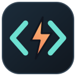

Editor nativo em Rust
Janela nativa com renderização de texto usando wgpu e glyphon.

VS Rust Codium Baixar v0.1.0Versão 0.1.0 disponível
Um editor leve e nativo para abrir arquivos, editar código Rust, acompanhar a sintaxe e salvar seu trabalho. A primeira versão já está disponível para você experimentar.
Código aberto · Rust · Windows, Linux e macOS
Ferramentas para o dia a dia
Os recursos centrais de um editor, construídos em Rust e prontos para evoluir com quem usa.
Janela nativa com renderização de texto usando wgpu e glyphon.
Tree-sitter reconhece elementos da linguagem e aplica realce de sintaxe.
Navegação pelo código, indentação, numeração de linhas e desfazer/refazer.
Abra um arquivo pelo terminal e salve suas alterações com Ctrl+S.
Primeira versão pública
Escolha seu sistema operacional e comece a experimentar o editor.
Windows: extraia o ZIP e execute o programa. Linux/macOS: extraia o .tar.gz e execute ./vs-rust-codium.
Para quem prefere compilar
Com Rust e Cargo instalados, clone o repositório e abra um arquivo pelo terminal:
Ver notas da versãoTerminal
# Clone o projeto
git clone https://github.com/dieguesmosken/vs-rust-codium.git
cd vs-rust-codium
# Abra um arquivo Rust
cargo run -- caminho/para/arquivo.rsCtrl+S salva o arquivo que você abriu pelo terminal.
Feito para ser construído em conjunto
O projeto está em estágio inicial. Ajude com código Rust, testes, documentação, ideias de interface, traduções ou relatos de bugs.